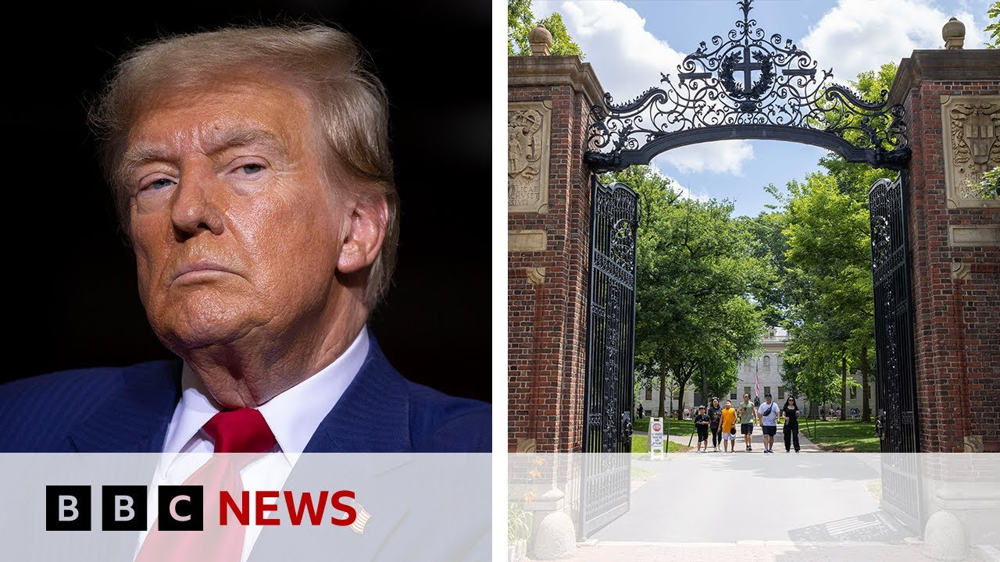

【美国总统特朗普禁止哈佛大学招收外国学生 | BBC新闻】
Summary: The US government has blocked Harvard University from enrolling foreign students, accusing it of fostering violence and anti-semitism, while Harvard claims the move is illegal.
摘要： 美国政府禁止哈佛大学招收外国学生，指控其助长暴力和反犹太主义，而哈佛称此举非法。

⏱️ Estimated Reading Time: 4 min
Next, the US government says it's blocking the prestigious Harvard University from enrolling foreign students with immediate effect.
美国政府表示，将立即禁止著名的哈佛大学招收外国学生。
Well, Harvard relies heavily on fees from overseas students and those currently studying there will now have to transfer elsewhere.
哈佛大学严重依赖海外学生的学费，目前在校的外国学生将不得不转学。
The White House has accused the institution of fostering violence and anti-semitism and says the university isn't doing enough to limit the power students have on campus.
白宫指控该机构助长暴力和反犹太主义，并表示大学未采取足够措施限制学生在校园的影响力。
Harvard, on the other hand, says the government's acting illegally.
哈佛大学则称政府的行为是非法的。
The US Homeland Security Secretary is Christy Gnome and she told Fox News why the government's targeting Harvard.
美国国土安全部部长克里斯蒂·诺姆向福克斯新闻解释了政府针对哈佛的原因。
They have promoted and allowed uh violent activity on campus.
他们纵容并允许校园内的暴力活动。
They have allowed anti-semitism participation with CCP uh and Chinese infiltration and uh influence on their campus and they haven't protected their students.
他们允许反犹太主义活动与中国共产党的渗透和影响，且未保护学生。
Uh so we have given them multiple opportunities to share criminal activity with us um backgrounds on these students to let us conduct the oversight into this program.
我们已多次要求他们分享涉及这些学生的犯罪活动背景，以便我们监督该项目。
That is our responsibility and they have refused to do so.
这是我们的职责，但他们拒绝配合。
Well, our senior North America correspondent John Sudworth has more background on the story.
北美资深记者约翰·苏德沃斯提供了更多背景信息。
Well, almost from the moment of his inauguration, Donald Trump began pressuring America's elite universities over what he saw as woke ideology in their teaching and anti-semitism on their campuses, in particular over their handling of pro Palestinian protests.
特朗普上任后不久，就开始向美国精英大学施压，批评其教学中的“觉醒”意识形态和校园内的反犹太主义，尤其是对亲巴勒斯坦抗议的处理。
Harvard though was the first to really push back against some of that pressure, launching legal action over a decision to freeze some $2 billion of its federal grants and refusing to comply with the suggestion that it ought to alter its curriculum and its hiring practices.
哈佛是首个强烈抵制的大学，就冻结20亿美元联邦拨款的决定提起诉讼，并拒绝修改课程和招聘政策。
Now, the administration has clearly doubled down, halting Harvard's ability to enroll international students who make up a quarter of its 24,000 strong student body and of course bring in a significant amount of income.
如今，政府进一步施压，禁止哈佛招收占其2.4万名学生四分之一的国际学生，这些学生为其带来大量收入。
In a letter to Harvard, the Homeland Security Secretary Christy Nome said this.
国土安全部部长克里斯蒂·诺姆在致哈佛的信中表示。
She said that Harvard had been fostering violence, anti-semitism, and coordinating with the Chinese Communist Party.
她称哈佛助长暴力、反犹太主义，并与中国共产党合作。
It's unclear what this means for students who are currently enrolled and here on visas.
目前尚不清楚这对持签证在校的学生意味着什么。
Uh the suggestion uh is that they may have to leave the United States unless they can find alternative courses with other universities.
他们可能不得不离开美国，除非能在其他大学找到替代课程。
But Harvard uh in its response said this.
但哈佛在回应中表示。
It called the decision unlawful and it says it threatens serious harm not only to the university but to the country and it seems likely many people suggest that there will be further legal action over this decision and so the fate of existing students may be now with the US courts.
哈佛称该决定非法，不仅对大学且对国家造成严重损害，许多人认为将就此采取进一步法律行动，现有学生的命运可能取决于美国法院。